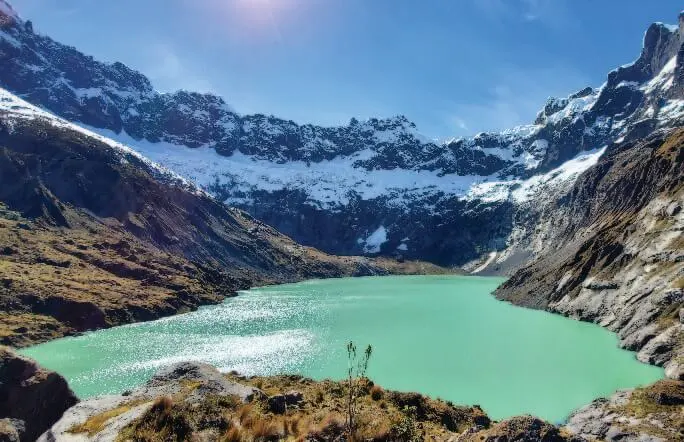
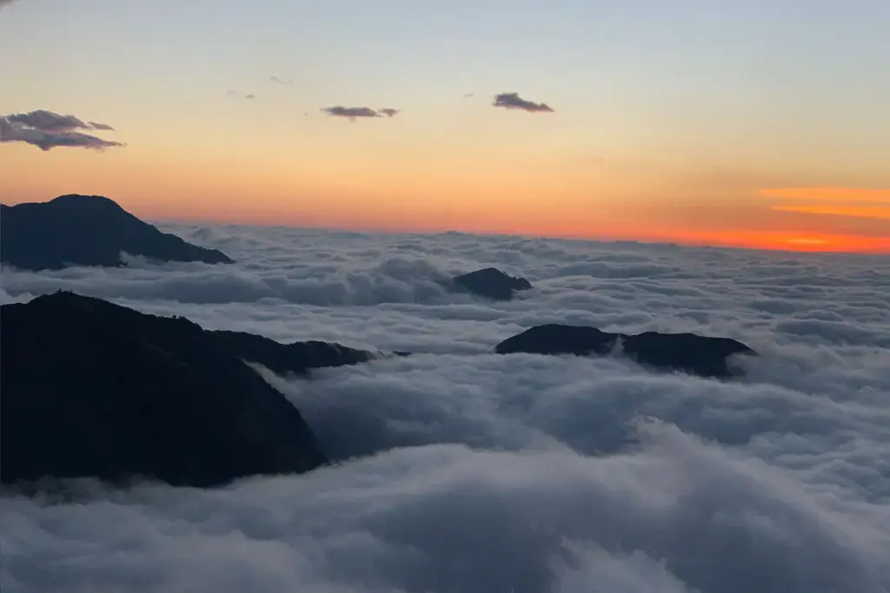
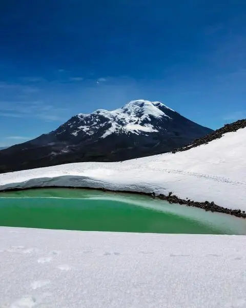
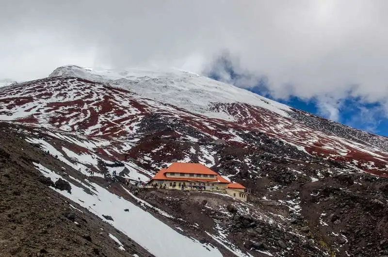

Welcome Chimborazo Mountaineering Club
Discover the best places in Chimborazo for adventure sports.

The chorrera Chimborazo

The lake Blue

The lake Yellow

Hill Puñay

The lake carihuaraizo

Chimborazo Shelter
Learn more about the majestic and imposing volcan Chimborazo
Learn more about the history of the powerful Chimborazo volcano, one of the highest volcanoes in South America, followed by Everest. If you would like to know more, we leave the link here.
More Information
Facts about Chimborazo
- Location: 150 km south of Quito
- Cordillera:Andes
- Current population:471,933 people
- Zip code: EC06
Our History
- Foundation: January 18, 2024 in city Riobamba
- Manager: Jhonatan Yugsan
- Workers: 20 Workers
Sources of information
Turist Riobamba:https://riobamba.com.ec/